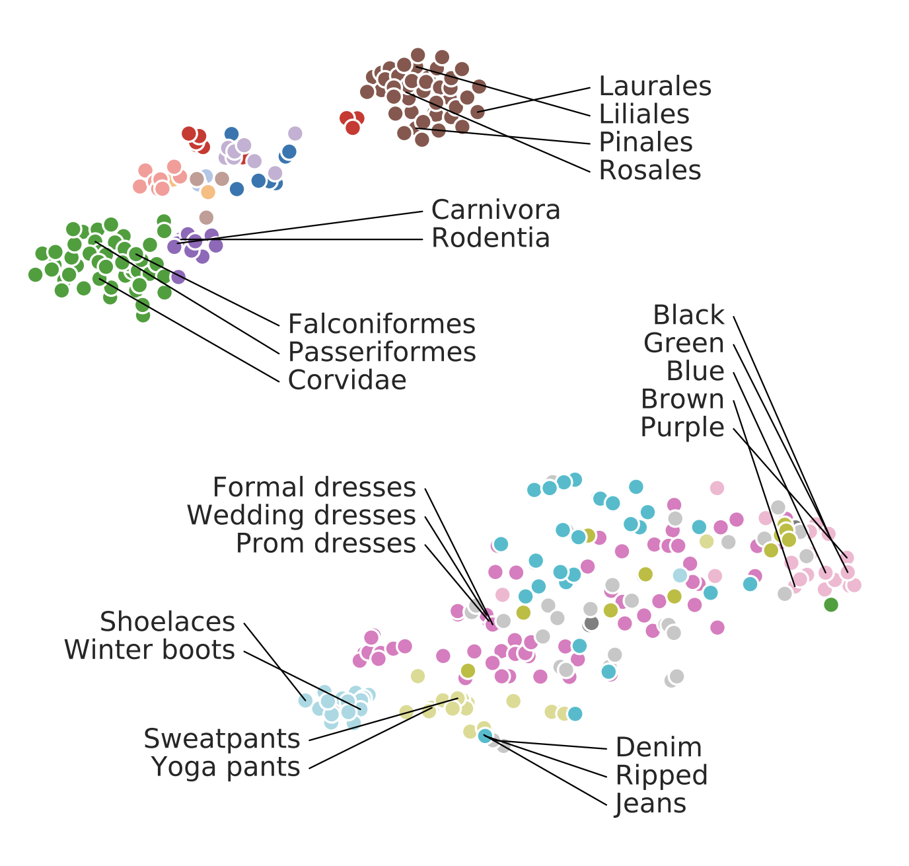

What is a Model Lake?
The concept of data lakes emerged in early 2010s to collect raw, unstructured data at scale — laying the foundation for modern big data analytics. As organizations recognized the value of vast, untapped data, the study of data lakes evolved, shaping how we store, manage, and extract insights from large-scale information.
Today, we face a similar shift with pre-trained models. Just as data lakes transformed data management, model lakes offer a new paradigm for organizing and understanding the growing ecosystem of AI models. Our paper formalizes and standardizes key model lake tasks — improving model search, analysis, and utilization while bridging community efforts toward the common challenge of navigating a vast model space.

Three Viewpoints of a Model
An AI model can be analyzed from three viewpoints:
- History: Documentation, primarily model cards that may include records of training data, methodology, and development process.
- Intrinsic Composition: Model's internal structure, parameters, and associated weights.
- Extrinsic Behavior: Observable outputs, responses, and interactions.
The Four Categories of Model Lake Tasks
Model lake tasks focus on extracting and presenting insights from stored models, enabling a deeper understanding of their origins, relationships, and performance. These tasks include:
- Model Attribution: Tracing how a model's output was generated.
- Model Versioning: Identifying if and how models are derived from others.
- Model Search: Finding relevant or desired models.
- Benchmarking: Evaluating model performance through rigorous testing.
Related Works
Preliminary work from various specialized fields—including databases, interpretability, and cybersecurity—has shaped our understanding of model lake tasks, guiding how we define and approach each one.
Model Attribution
Peter Buneman, Sanjeev Khanna, and Wang-Chiew Tan. Why and Where: A Characterization of Data Provenance. 2001.
Notes: In data lakes, data provenance is the "description of the origins of a piece of data and the process by which it arrived in a database." We extend this concept to model attribution.
Roger Grosse, Juhan Bae, Cem Anil, Nelson Elhage, Alex Tamkin, Amirhossein Tajdini, Benoit Steiner, Dustin Li, Esin Durmus, Ethan Perez, Evan Hubinger, Kamilė Lukošiūtė, Karina Nguyen, Nicholas Joseph, Sam McCandlish, Jared Kaplan, Samuel R. Bowman. Studying Large Language Model Generalization with Influence Functions. 2023.
Notes: Influence functions aim to answer a counterfactual: how would the model's parameters (and hence its outputs) change if a given sequence were added to the training set?
Weijia Shi, Anirudh Ajith, Mengzhou Xia, Yangsibo Huang, Daogao Liu, Terra Blevins, Danqi Chen, Luke Zettlemoyer. Detecting Pretraining Data from Large Language Models. 2024.
Notes: Given a piece of text and black-box access to an LLM without knowing the pretraining data, can we determine if the model was trained on the provided text?
Model Versioning
Roee Shraga, Renée Miller. Explaining Dataset Changes for Semantic Data Versioning with Explain-Da-V. 2023.
Notes: Explain-Da-V is a framework aiming to explain changes between two given dataset versions. Explain-Da-V generates explanations that use data transformations to explain changes.
Eliahu Horwitz, Asaf Shul, Yedid Hoshen. On the Origin of Llamas: Model Tree Heritage Recovery. 2024.
Notes: This paper introduces the task of Model Tree Heritage Recovery (MoTHer Recovery) for discovering Model Trees, which describes the origin of models i.e., the parent model that was used to fine-tune the target model.
We extend this definition to include multiple parent models to handle cases such as model stitching.
 Xin Mu, Yu Wang, Yehong Zhang, Jiaqi Zhang, Hui Wang, Yang Xiang, Yue Yu. Model Provenance via Model DNA. 2023.
Xin Mu, Yu Wang, Yehong Zhang, Jiaqi Zhang, Hui Wang, Yang Xiang, Yue Yu. Model Provenance via Model DNA. 2023.
Notes: The authors propose a data- and model-driven method to encode "Model DNA" for identifying if a model is a pre-trained version of another, assuming both share the same architecture and training data.
Model Search
 Daohan Lu, Sheng-Yu Wang, Nupur Kumari, Rohan Agarwal, Mia Tang,
David Bau, and Jun-Yan Zhu. Content-based Search for Deep Generative Models. 2023.
Daohan Lu, Sheng-Yu Wang, Nupur Kumari, Rohan Agarwal, Mia Tang,
David Bau, and Jun-Yan Zhu. Content-based Search for Deep Generative Models. 2023.
Notes:
This paper introduces the task of content-based model search for vision models: given a query and a large set of generative models, find the models that best match the query.
 Alessandro Achille, Michael Lam, Rahul Tewari, Avinash Ravichandran, Subhransu Maji, Charless C. Fowlkes, Stefano Soatto, Pietro Perona. Task2Vec: Task Embedding for Meta-Learning. 2019.
Notes: The authors introduce a method to generate vectorial representations of visual classification tasks which can be used to reason about the nature of those tasks and their relations.
Wenxiao Wang, Weiming Zhuang, Lingjuan Lyu. Towards Fundamentally Scalable Model Selection:
Asymptotically Fast Update and Selection. 2024.
Notes: The authors define isolated model embedding, which refers to a subset of the model
embedding family where computing the embedding of each individual model is isolated from the others.
Benchmarking
Dan Hendrycks, Collin Burns, Steven Basart, Andy Zou, Mantas Mazeika, Dawn Song, Jacob Steinhardt. Measuring Massive Multitask Language Understanding. 2021.
Notes: The authors propose a new test to measure a text model's multitask accuracy. The test
covers 57 tasks including elementary mathematics, US history, computer science,
law, and more.
Tsung-Yi Lin, Michael Maire, Serge Belongie, James Hays, Pietro Perona,
Deva Ramanan, Piotr Dollár, and C Lawrence Zitnick. 2014. Microsoft COCO: Common objects in Context. 2014.
Notes: The authors present a dataset with the goal of advancing the state-of-the-art in object recognition by placing the question of object recognition in the context of the broader question of scene understanding.
Konstantin Schürholt, Diyar Taskiran, Boris Knyazev, Xavier Giró-i-Nieto, Damian Borth. Model Zoos: A Dataset of Diverse Populations of Neural Network Models. 2022.
Notes: The authors publish a novel dataset of model zoos containing vision models trained on several image dataset with two CNN architectures
and a multiple configurations of hyperparameters.
How to cite
This work is appearing at EDBT 2025. The preprint version can be cited as follows:
bibliography
Pal, Koyena, David Bau, and Renée J. Miller. "Model Lakes." arXiv preprint arXiv:2403.02327 (2024).
bibtex
@misc{pal2025modellakes,
title={Model Lakes},
author={Koyena Pal and David Bau and Renée J. Miller},
year={2025},
eprint={2403.02327},
archivePrefix={arXiv},
primaryClass={cs.DB},
url={https://arxiv.org/abs/2403.02327},}